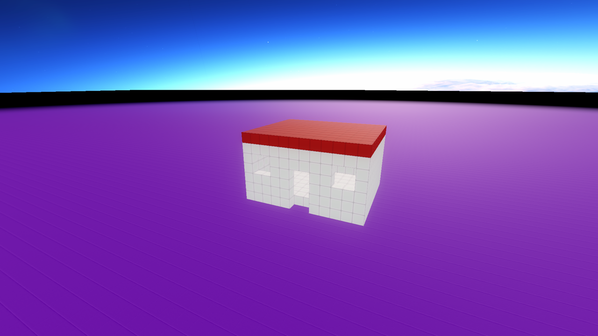

Tutorial: Build a House
The first tutorial covered moving around and steering a bot. This one builds something you can walk into: a little house, one command at a time. By the end you'll have used most of the shape commands and know how to fix a build when it comes out wrong.
Get a Build to code
Everything here is drawn by a Build — a unit made of blocks. Place one by
picking a block color from the toolbar and dropping a block in the world.
Then switch to the Code tool (key 1) and click the block to open its code.
Type each step below into that code window, and press left
alt/option (⌥) to run it. Enu re-runs the whole script every time, so you can
keep editing and re-running as you go.
Start slow
Put this at the very top. speed = 0 means "draw it all at once" instead of
block by block — handy while you're experimenting, since you don't have to wait
for each run:
speed = 0
Four walls
A hollow box is four walls, a floor, and a ceiling all at once. fill = false
is what makes it hollow:
speed = 0
color = white
box 12, 6, 10, fill = false
A door and some windows
A house needs a way in. eraser is a color that removes blocks instead of
drawing them, so we erase a door-shaped hole in the front wall, and two smaller
holes for windows. at places each hole at an exact spot:
speed = 0
color = white
box 12, 6, 10, fill = false
# a doorway
box 2, 4, 1, at = vec3(5, 0, 9), color = eraser
# two windows
box 2, 2, 1, at = vec3(1, 3, 9), color = eraser
box 2, 2, 1, at = vec3(9, 3, 9), color = eraser
Why vec3(5, 0, 9)?
vec3 is a spot in the build: how far right, up, and forward. The 9 puts the
holes on the front wall (the one facing you) instead of the back. If your door
comes out on the wrong side, change the 9 to 0 — or spin the whole house
later with rotation.
A roof
Give it a red roof by drawing a thin box across the top:
speed = 0
color = white
box 12, 6, 10, fill = false
# a doorway
box 2, 4, 1, at = vec3(5, 0, 9), color = eraser
# two windows
box 2, 2, 1, at = vec3(1, 3, 9), color = eraser
box 2, 2, 1, at = vec3(9, 3, 9), color = eraser
# a red roof
color = red
box 12, 1, 10, at = vec3(0, 6, 0)

That's a house! Walk over and go inside through the door.
Make it yours
Now the fun part — change things and re-run:
-
Swap
whiteforbrownorblueto repaint the walls. -
Make it bigger: change
12, 6, 10to20, 10, 16. (You'll need to move the door and windows to match.) -
Add a chimney with a
can:color = black can 2, 4, at = vec3(9, 6, 2) -
Put a
ballon top for a fancy dome, or a whole second story with anotherbox.
When something goes wrong
Building is mostly fixing. A few things that trip everyone up:
- The pieces don't line up.
boxand shapes withatmeasure from the build's corner. Butwall,floor, and a plainboxwith noatstart from wherever the drawing turtle is — andwallandfloormove the turtle to their far end. If parts drift apart, give everything anatso they share the same measuring stick. - You can't find your build. Fly up (double-jump, then hold jump) for a better view.
- It's a mess and you want to start over. Delete everything the build has
drawn and start fresh by putting
reset trueat the very top of the script.
Next steps
- The full list of shapes is on the Drawing Shapes page.
- Make your house do something with Command Loops — a door that opens when you're near, lights that flicker, a bot that patrols.
- Browse the API Reference for every command Enu knows.